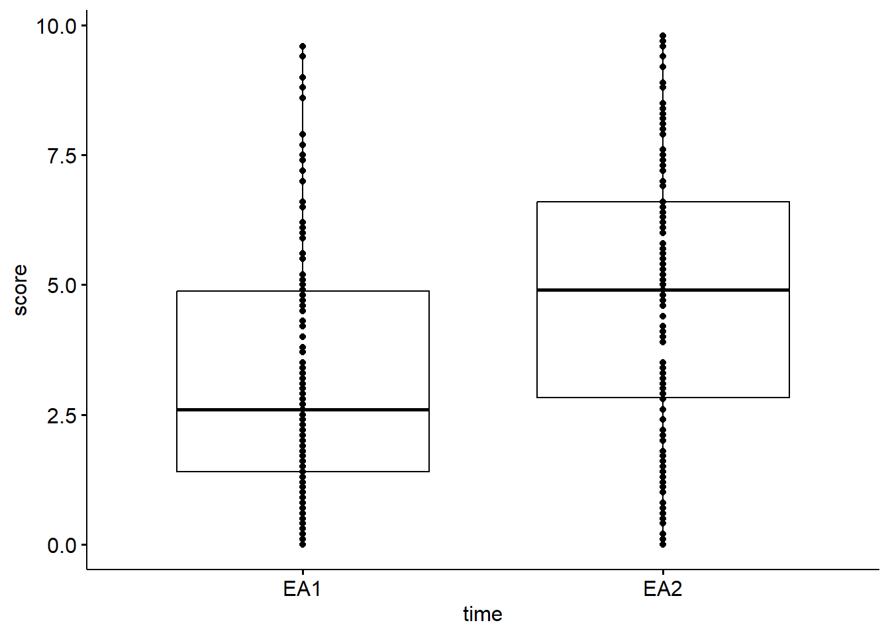
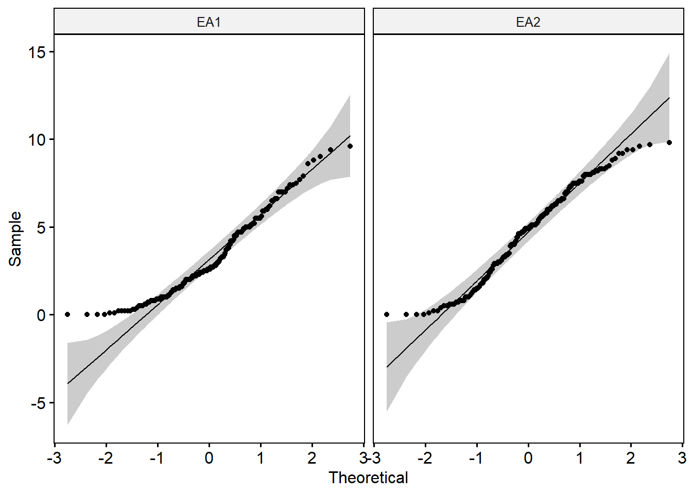
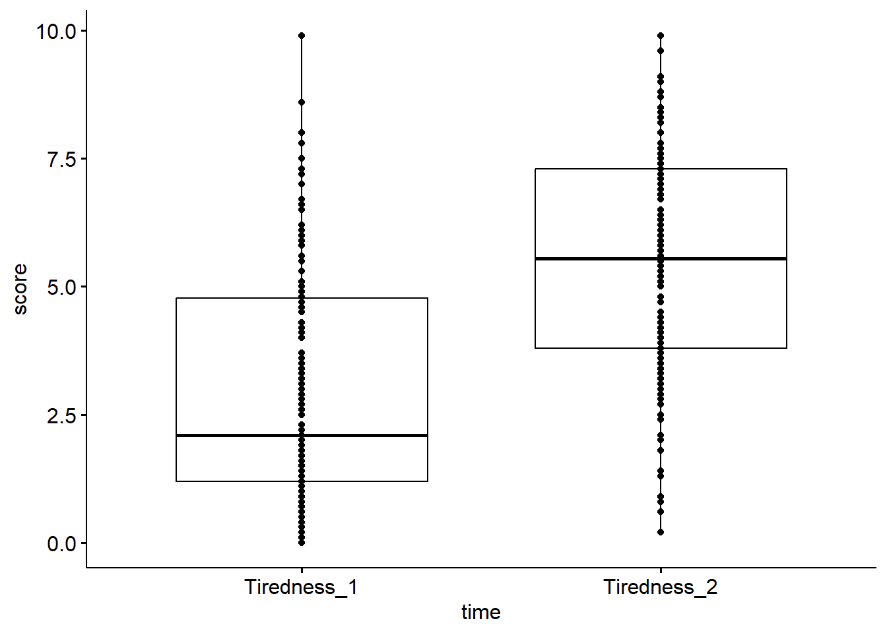
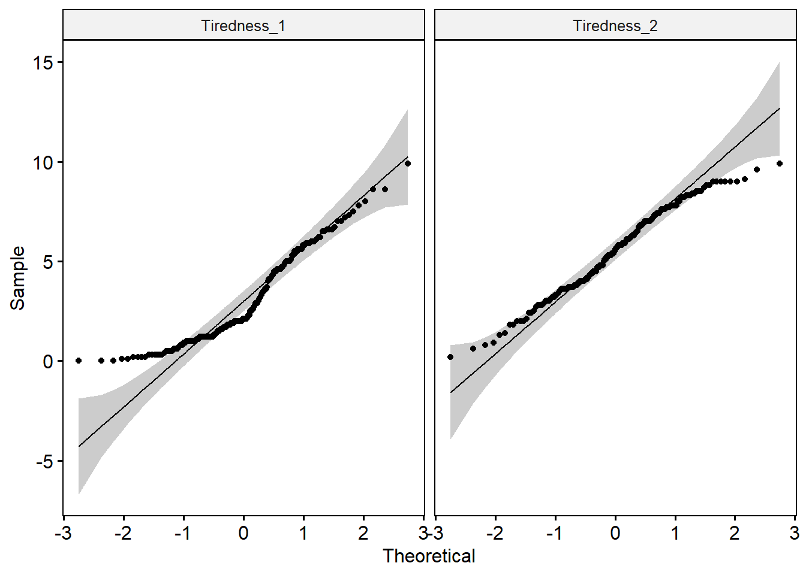

library(tidyverse)
library(rstatix)
library(gtsummary)
library(lmtest)
library(ggpubr)
library(car)
library(MASS)
library(nortest)Demographic_table_results
Libraries
Rows: 166 Columns: 22
── Column specification ────────────────────────────────────────────────────────
Delimiter: ","
chr (1): Group
dbl (21): Subject, Age, Sex, STEM, PANAS_PA, PANAS_NA, EA1, EA2, Tiredness_1...
ℹ Use `spec()` to retrieve the full column specification for this data.
ℹ Specify the column types or set `show_col_types = FALSE` to quiet this message.1. Main analysis
1. 1 Demographic table
Demographic_data <- CST_final |> dplyr::select(Age:Tes,-Sex)
demographic_summary_1 <- Demographic_data |>
tbl_summary(
by = Group,
missing = "no",
statistic = list(
all_continuous() ~ "{mean} ({sd})"
)
) |>
add_p(
test = all_continuous() ~ "aov",
pvalue_fun = function(x) style_pvalue(x, digits = 2)
)The following warning was returned in `add_p()` for variable "Age"
! The test "aov" in `add_p(test)` was deprecated in gtsummary 2.0.0. ℹ The same
functionality is covered with "oneway.test". Use the following code instead:
ℹ `add_p(test = list(Age = 'oneway.test'), test.args = list(Age =
list(var.equal = TRUE)))`.
The following warning was returned in `add_p()` for variable "PANAS_PA"
! The test "aov" in `add_p(test)` was deprecated in gtsummary 2.0.0. ℹ The same
functionality is covered with "oneway.test". Use the following code instead:
ℹ `add_p(test = list(PANAS_PA = 'oneway.test'), test.args = list(PANAS_PA =
list(var.equal = TRUE)))`.
The following warning was returned in `add_p()` for variable "PANAS_NA"
! The test "aov" in `add_p(test)` was deprecated in gtsummary 2.0.0. ℹ The same
functionality is covered with "oneway.test". Use the following code instead:
ℹ `add_p(test = list(PANAS_NA = 'oneway.test'), test.args = list(PANAS_NA =
list(var.equal = TRUE)))`.
The following warning was returned in `add_p()` for variable "EA1"
! The test "aov" in `add_p(test)` was deprecated in gtsummary 2.0.0. ℹ The same
functionality is covered with "oneway.test". Use the following code instead:
ℹ `add_p(test = list(EA1 = 'oneway.test'), test.args = list(EA1 =
list(var.equal = TRUE)))`.
The following warning was returned in `add_p()` for variable "EA2"
! The test "aov" in `add_p(test)` was deprecated in gtsummary 2.0.0. ℹ The same
functionality is covered with "oneway.test". Use the following code instead:
ℹ `add_p(test = list(EA2 = 'oneway.test'), test.args = list(EA2 =
list(var.equal = TRUE)))`.
The following warning was returned in `add_p()` for variable "Tiredness_1"
! The test "aov" in `add_p(test)` was deprecated in gtsummary 2.0.0. ℹ The same
functionality is covered with "oneway.test". Use the following code instead:
ℹ `add_p(test = list(Tiredness_1 = 'oneway.test'), test.args =
list(Tiredness_1 = list(var.equal = TRUE)))`.
The following warning was returned in `add_p()` for variable "Tiredness_2"
! The test "aov" in `add_p(test)` was deprecated in gtsummary 2.0.0. ℹ The same
functionality is covered with "oneway.test". Use the following code instead:
ℹ `add_p(test = list(Tiredness_2 = 'oneway.test'), test.args =
list(Tiredness_2 = list(var.equal = TRUE)))`.
The following warning was returned in `add_p()` for variable "Femininity"
! The test "aov" in `add_p(test)` was deprecated in gtsummary 2.0.0. ℹ The same
functionality is covered with "oneway.test". Use the following code instead:
ℹ `add_p(test = list(Femininity = 'oneway.test'), test.args = list(Femininity
= list(var.equal = TRUE)))`.
The following warning was returned in `add_p()` for variable "Masculinity"
! The test "aov" in `add_p(test)` was deprecated in gtsummary 2.0.0. ℹ The same
functionality is covered with "oneway.test". Use the following code instead:
ℹ `add_p(test = list(Masculinity = 'oneway.test'), test.args =
list(Masculinity = list(var.equal = TRUE)))`.
The following warning was returned in `add_p()` for variable "P4"
! The test "aov" in `add_p(test)` was deprecated in gtsummary 2.0.0. ℹ The same
functionality is covered with "oneway.test". Use the following code instead:
ℹ `add_p(test = list(P4 = 'oneway.test'), test.args = list(P4 =
list(var.equal = TRUE)))`.
The following warning was returned in `add_p()` for variable "E2"
! The test "aov" in `add_p(test)` was deprecated in gtsummary 2.0.0. ℹ The same
functionality is covered with "oneway.test". Use the following code instead:
ℹ `add_p(test = list(E2 = 'oneway.test'), test.args = list(E2 =
list(var.equal = TRUE)))`.
The following warning was returned in `add_p()` for variable "Tes"
! The test "aov" in `add_p(test)` was deprecated in gtsummary 2.0.0. ℹ The same
functionality is covered with "oneway.test". Use the following code instead:
ℹ `add_p(test = list(Tes = 'oneway.test'), test.args = list(Tes =
list(var.equal = TRUE)))`.demographic_summary_1Characteristic |
Males |
NCF |
NCL |
OC |
IUD |
p-value 2 |
|---|---|---|---|---|---|---|
| Age | 26.5 (4.1) | 27.6 (5.2) | 26.4 (4.4) | 24.1 (3.6) | 27.5 (4.3) | 0.025 |
| STEM | 0.001 | |||||
| 0 | 11 (31%) | 29 (78%) | 24 (67%) | 14 (52%) | 19 (61%) | |
| 1 | 24 (69%) | 8 (22%) | 12 (33%) | 13 (48%) | 12 (39%) | |
| PANAS_PA | 35.5 (4.8) | 38.0 (5.6) | 36.7 (6.2) | 34.8 (5.7) | 36.8 (6.2) | 0.19 |
| PANAS_NA | 23 (7) | 26 (7) | 26 (8) | 24 (7) | 26 (6) | 0.27 |
| EA1 | 2.56 (1.98) | 3.49 (2.35) | 3.16 (2.30) | 3.26 (2.51) | 3.59 (2.34) | 0.37 |
| EA2 | 3.79 (2.44) | 5.26 (2.71) | 5.02 (2.43) | 4.57 (2.66) | 4.83 (2.81) | 0.16 |
| Tiredness_1 | 3.21 (2.33) | 2.91 (2.27) | 2.96 (2.33) | 2.91 (2.39) | 2.94 (2.25) | 0.98 |
| Tiredness_2 | 5.32 (2.33) | 5.06 (2.22) | 6.03 (1.97) | 5.52 (1.79) | 5.57 (2.48) | 0.43 |
| Femininity | 4.37 (0.46) | 5.02 (0.54) | 5.11 (0.42) | 4.81 (0.48) | 4.88 (0.54) | <0.001 |
| Masculinity | 4.79 (0.66) | 4.28 (0.64) | 4.39 (0.66) | 4.25 (0.75) | 4.10 (0.80) | 0.001 |
| P4 | NA (NA) | 74 (48) | 218 (137) | 100 (63) | 100 (85) | <0.001 |
| E2 | NA (NA) | 1.38 (0.49) | 1.48 (0.54) | 1.26 (0.82) | 1.48 (0.63) | 0.44 |
| Tes | 234 (65) | 76 (26) | 78 (24) | 57 (17) | 81 (26) | <0.001 |
| 1
Mean (SD); n (%) |
||||||
| 2
One-way analysis of means; Pearson’s Chi-squared test |
||||||
Parametricity
CST_final |>
group_by(Group) |>
shapiro_test(Age, PANAS_PA, PANAS_NA, EA1, EA2, Tiredness_1, Tiredness_2, Femininity, Masculinity, P4, E2, Tes)# A tibble: 58 × 4
Group variable statistic p
<fct> <chr> <dbl> <dbl>
1 Males Age 0.953 0.143
2 Males EA1 0.908 0.00642
3 Males EA2 0.957 0.180
4 Males Femininity 0.976 0.621
5 Males Masculinity 0.967 0.367
6 Males PANAS_NA 0.961 0.239
7 Males PANAS_PA 0.956 0.177
8 Males Tes 0.969 0.412
9 Males Tiredness_1 0.917 0.0116
10 Males Tiredness_2 0.972 0.512
# ℹ 48 more rowsCST_final |>
group_by(Group) |>
shapiro_test(Age, PANAS_PA, PANAS_NA, EA1, EA2, Tiredness_1, Tiredness_2, Femininity, Masculinity, P4, E2, Tes)# A tibble: 58 × 4
Group variable statistic p
<fct> <chr> <dbl> <dbl>
1 Males Age 0.953 0.143
2 Males EA1 0.908 0.00642
3 Males EA2 0.957 0.180
4 Males Femininity 0.976 0.621
5 Males Masculinity 0.967 0.367
6 Males PANAS_NA 0.961 0.239
7 Males PANAS_PA 0.956 0.177
8 Males Tes 0.969 0.412
9 Males Tiredness_1 0.917 0.0116
10 Males Tiredness_2 0.972 0.512
# ℹ 48 more rowsAge
CST_final |>
group_by(Group) |>
shapiro_test(Age)# A tibble: 5 × 4
Group variable statistic p
<fct> <chr> <dbl> <dbl>
1 Males Age 0.953 0.143
2 NCF Age 0.912 0.00628
3 NCL Age 0.963 0.272
4 OC Age 0.940 0.120
5 IUD Age 0.944 0.108 CST_final |>
levene_test(Age~Group)# A tibble: 1 × 4
df1 df2 statistic p
<int> <int> <dbl> <dbl>
1 4 161 1.93 0.109res.aov <- CST_final |> anova_test(Age ~ Group)
res.aovANOVA Table (type II tests)
Effect DFn DFd F p p<.05 ges
1 Group 4 161 2.855 0.025 * 0.066CST_final |> tukey_hsd(Age ~ Group)# A tibble: 10 × 9
term group1 group2 null.value estimate conf.low conf.high p.adj p.adj.signif
* <chr> <chr> <chr> <dbl> <dbl> <dbl> <dbl> <dbl> <chr>
1 Group Males NCF 0 1.08 -1.80 3.96 0.838 ns
2 Group Males NCL 0 -0.0690 -2.97 2.83 1 ns
3 Group Males OC 0 -2.34 -5.47 0.790 0.242 ns
4 Group Males IUD 0 1.03 -1.98 4.04 0.879 ns
5 Group NCF NCL 0 -1.15 -4.01 1.71 0.801 ns
6 Group NCF OC 0 -3.42 -6.51 -0.329 0.022 *
7 Group NCF IUD 0 -0.0514 -3.02 2.92 1 ns
8 Group NCL OC 0 -2.27 -5.38 0.840 0.264 ns
9 Group NCL IUD 0 1.10 -1.89 4.09 0.849 ns
10 Group OC IUD 0 3.37 0.154 6.58 0.035 * STEM
STEM <- table(CST_final$STEM, CST_final$Group)chisq_test(STEM)# A tibble: 1 × 6
n statistic p df method p.signif
* <int> <dbl> <dbl> <int> <chr> <chr>
1 166 18.2 0.00115 4 Chi-square test ** pairwise_chisq_gof_test(STEM,p.adjust.method = "fdr")# A tibble: 45 × 8
n group1 group2 statistic p df p.adj p.adj.signif
* <int> <chr> <chr> <dbl> <dbl> <dbl> <dbl> <chr>
1 2 grp1 grp2 4.83 0.028 1 0.126 ns
2 2 grp1 grp3 8.1 0.00443 1 0.0526 ns
3 2 grp1 grp4 0.474 0.491 1 0.651 ns
4 2 grp1 grp5 4.83 0.028 1 0.126 ns
5 2 grp1 grp6 0.0435 0.835 1 0.886 ns
6 2 grp1 grp7 0.36 0.549 1 0.706 ns
7 2 grp1 grp8 0.167 0.683 1 0.823 ns
8 2 grp1 grp9 2.13 0.144 1 0.319 ns
9 2 grp1 grp10 0.0435 0.835 1 0.886 ns
10 2 grp2 grp3 0.472 0.492 1 0.651 ns
# ℹ 35 more rowsPANAS
CST_final |>
group_by(Group) |>
shapiro_test(PANAS_PA, PANAS_NA)# A tibble: 10 × 4
Group variable statistic p
<fct> <chr> <dbl> <dbl>
1 Males PANAS_NA 0.961 0.239
2 Males PANAS_PA 0.956 0.177
3 NCF PANAS_NA 0.981 0.765
4 NCF PANAS_PA 0.963 0.247
5 NCL PANAS_NA 0.921 0.0137
6 NCL PANAS_PA 0.963 0.271
7 OC PANAS_NA 0.966 0.491
8 OC PANAS_PA 0.979 0.839
9 IUD PANAS_NA 0.980 0.812
10 IUD PANAS_PA 0.949 0.146 CST_final |>
levene_test(PANAS_PA~Group)# A tibble: 1 × 4
df1 df2 statistic p
<int> <int> <dbl> <dbl>
1 4 161 1.01 0.406CST_final |>
levene_test(PANAS_NA~Group)# A tibble: 1 × 4
df1 df2 statistic p
<int> <int> <dbl> <dbl>
1 4 161 0.658 0.622res.aov2 <- CST_final |> anova_test(PANAS_PA ~ Group)
res.aov2ANOVA Table (type II tests)
Effect DFn DFd F p p<.05 ges
1 Group 4 161 1.543 0.192 0.037res.aov3 <- CST_final |> anova_test(PANAS_NA ~ Group)
res.aov3ANOVA Table (type II tests)
Effect DFn DFd F p p<.05 ges
1 Group 4 161 1.303 0.271 0.031GERAS
CST_final |>
group_by(Group) |>
shapiro_test(Femininity, Masculinity)# A tibble: 10 × 4
Group variable statistic p
<fct> <chr> <dbl> <dbl>
1 Males Femininity 0.976 0.621
2 Males Masculinity 0.967 0.367
3 NCF Femininity 0.982 0.813
4 NCF Masculinity 0.987 0.942
5 NCL Femininity 0.964 0.285
6 NCL Masculinity 0.978 0.673
7 OC Femininity 0.977 0.786
8 OC Masculinity 0.959 0.344
9 IUD Femininity 0.982 0.855
10 IUD Masculinity 0.955 0.208CST_final |>
levene_test(Femininity~Group)# A tibble: 1 × 4
df1 df2 statistic p
<int> <int> <dbl> <dbl>
1 4 161 0.912 0.458CST_final |>
levene_test(Masculinity~Group)# A tibble: 1 × 4
df1 df2 statistic p
<int> <int> <dbl> <dbl>
1 4 161 0.549 0.700CST_final |> anova_test(Femininity ~ Group)ANOVA Table (type II tests)
Effect DFn DFd F p p<.05 ges
1 Group 4 161 12.119 1.23e-08 * 0.231CST_final |>
emmeans_test(Femininity ~ Group, p.adjust.method = "bonferroni")# A tibble: 10 × 9
term .y. group1 group2 df statistic p p.adj p.adj.signif
* <chr> <chr> <chr> <chr> <dbl> <dbl> <dbl> <dbl> <chr>
1 Group Femininity Males NCF 161 -5.63 7.96e-8 7.96e-7 ****
2 Group Femininity Males NCL 161 -6.37 1.92e-9 1.92e-8 ****
3 Group Femininity Males OC 161 -3.52 5.54e-4 5.54e-3 **
4 Group Femininity Males IUD 161 -4.22 4.02e-5 4.02e-4 ***
5 Group Femininity NCF NCL 161 -0.789 4.31e-1 1 e+0 ns
6 Group Femininity NCF OC 161 1.68 9.57e-2 9.57e-1 ns
7 Group Femininity NCF IUD 161 1.17 2.43e-1 1 e+0 ns
8 Group Femininity NCL OC 161 2.39 1.79e-2 1.79e-1 ns
9 Group Femininity NCL IUD 161 1.92 5.68e-2 5.68e-1 ns
10 Group Femininity OC IUD 161 -0.528 5.99e-1 1 e+0 ns CST_final |>
tukey_hsd(Femininity ~ Group)# A tibble: 10 × 9
term group1 group2 null.value estimate conf.low conf.high p.adj
* <chr> <chr> <chr> <dbl> <dbl> <dbl> <dbl> <dbl>
1 Group Males NCF 0 0.650 0.331 0.968 0.00000079
2 Group Males NCL 0 0.740 0.420 1.06 0.0000000191
3 Group Males OC 0 0.442 0.0960 0.788 0.00496
4 Group Males IUD 0 0.510 0.177 0.843 0.000384
5 Group NCF NCL 0 0.0905 -0.226 0.407 0.933
6 Group NCF OC 0 -0.208 -0.550 0.134 0.452
7 Group NCF IUD 0 -0.140 -0.469 0.189 0.768
8 Group NCL OC 0 -0.298 -0.642 0.0458 0.123
9 Group NCL IUD 0 -0.230 -0.561 0.101 0.312
10 Group OC IUD 0 0.0680 -0.288 0.424 0.984
# ℹ 1 more variable: p.adj.signif <chr>CST_final |> anova_test(Masculinity ~ Group)ANOVA Table (type II tests)
Effect DFn DFd F p p<.05 ges
1 Group 4 161 4.713 0.001 * 0.105CST_final |>
tukey_hsd(
Masculinity ~ Group
)# A tibble: 10 × 9
term group1 group2 null.value estimate conf.low conf.high p.adj
* <chr> <chr> <chr> <dbl> <dbl> <dbl> <dbl> <dbl>
1 Group Males NCF 0 -0.508 -0.961 -0.0550 0.0195
2 Group Males NCL 0 -0.406 -0.862 0.0507 0.107
3 Group Males OC 0 -0.544 -1.04 -0.0518 0.0222
4 Group Males IUD 0 -0.690 -1.16 -0.216 0.000847
5 Group NCF NCL 0 0.103 -0.347 0.553 0.97
6 Group NCF OC 0 -0.0359 -0.522 0.451 1
7 Group NCF IUD 0 -0.182 -0.650 0.286 0.82
8 Group NCL OC 0 -0.139 -0.628 0.351 0.936
9 Group NCL IUD 0 -0.285 -0.756 0.186 0.457
10 Group OC IUD 0 -0.146 -0.652 0.360 0.931
# ℹ 1 more variable: p.adj.signif <chr>CST_final |>
emmeans_test(Masculinity ~ Group, p.adjust.method = "bonferroni")# A tibble: 10 × 9
term .y. group1 group2 df statistic p p.adj p.adj.signif
* <chr> <chr> <chr> <chr> <dbl> <dbl> <dbl> <dbl> <chr>
1 Group Masculinity Males NCF 161 3.09 2.33e-3 2.33e-2 *
2 Group Masculinity Males NCL 161 2.45 1.52e-2 1.52e-1 ns
3 Group Masculinity Males OC 161 3.05 2.68e-3 2.68e-2 *
4 Group Masculinity Males IUD 161 4.02 9.00e-5 9.00e-4 ***
5 Group Masculinity NCF NCL 161 -0.629 5.30e-1 1 e+0 ns
6 Group Masculinity NCF OC 161 0.204 8.39e-1 1 e+0 ns
7 Group Masculinity NCF IUD 161 1.07 2.85e-1 1 e+0 ns
8 Group Masculinity NCL OC 161 0.781 4.36e-1 1 e+0 ns
9 Group Masculinity NCL IUD 161 1.67 9.73e-2 9.73e-1 ns
10 Group Masculinity OC IUD 161 0.797 4.26e-1 1 e+0 ns EA and tiredness
CST_final |> anova_test(Tiredness_1 ~ Group)ANOVA Table (type II tests)
Effect DFn DFd F p p<.05 ges
1 Group 4 161 0.106 0.98 0.003CST_final |> anova_test(EA1 ~ Group)ANOVA Table (type II tests)
Effect DFn DFd F p p<.05 ges
1 Group 4 161 1.069 0.373 0.026CST_final |> anova_test(Tiredness_2 ~ Group)ANOVA Table (type II tests)
Effect DFn DFd F p p<.05 ges
1 Group 4 161 0.962 0.43 0.023CST_final |> anova_test(EA2 ~ Group)ANOVA Table (type II tests)
Effect DFn DFd F p p<.05 ges
1 Group 4 161 1.666 0.161 0.04RM-ANOVA: Analysis of EA and tiredness
Filtrate just necessary data table
RM_data <- CST_final |> dplyr::select(Subject, Group, EA1, EA2, Tiredness_1, Tiredness_2)RM_data_long <- RM_data %>%
gather(key = "time", value = "score", EA1, EA2) |>
convert_as_factor(Subject, Group, time) Assumptions
bxp <- ggboxplot(RM_data_long, x = "time", y = "score", add = "point")
bxp
RM_data_long %>%
group_by(time) %>%
identify_outliers(score)[1] time Subject Group Tiredness_1 Tiredness_2 score
[7] is.outlier is.extreme
<0 rows> (or 0-length row.names)RM_data_long %>%
group_by(time) %>%
shapiro_test(score)# A tibble: 2 × 4
time variable statistic p
<fct> <chr> <dbl> <dbl>
1 EA1 score 0.942 0.00000252
2 EA2 score 0.969 0.000826 ggqqplot(RM_data_long, "score", facet.by = "time")
res.aov5 <- anova_test(
data = RM_data_long, dv = score, wid = Subject,
between = Group, within = time
)
get_anova_table(res.aov5)ANOVA Table (type III tests)
Effect DFn DFd F p p<.05 ges
1 Group 4 161 2.000 9.70e-02 0.031
2 time 1 161 41.107 1.53e-09 * 0.085
3 Group:time 4 161 0.371 8.29e-01 0.003RM_data_long2 <- RM_data %>%
gather(key = "time", value = "score", Tiredness_1, Tiredness_2) |>
convert_as_factor(Subject, Group, time)Assumptions
bxp <- ggboxplot(RM_data_long2, x = "time", y = "score", add = "point")
bxp
RM_data_long2 %>%
group_by(time) %>%
identify_outliers(score)[1] time Subject Group EA1 EA2 score is.outlier
[8] is.extreme
<0 rows> (or 0-length row.names)RM_data_long2 %>%
group_by(time) %>%
shapiro_test(score)# A tibble: 2 × 4
time variable statistic p
<fct> <chr> <dbl> <dbl>
1 Tiredness_1 score 0.917 0.0000000417
2 Tiredness_2 score 0.980 0.0174 ggqqplot(RM_data_long2, "score", facet.by = "time")
res.aov6 <- anova_test(
data = RM_data_long2, dv = score, wid = Subject,
between = Group, within = time
)
get_anova_table(res.aov6)ANOVA Table (type III tests)
Effect DFn DFd F p p<.05 ges
1 Group 4 161 0.342 8.49e-01 0.006
2 time 1 161 160.939 5.24e-26 * 0.241
3 Group:time 4 161 0.868 4.85e-01 0.007Sex hormones
Testosterone
CST_final |>
group_by(Group) |>
shapiro_test(Tes, E2, P4)# A tibble: 13 × 4
Group variable statistic p
<fct> <chr> <dbl> <dbl>
1 Males Tes 0.969 0.412
2 NCF E2 0.971 0.428
3 NCF P4 0.876 0.000690
4 NCF Tes 0.954 0.130
5 NCL E2 0.969 0.396
6 NCL P4 0.927 0.0200
7 NCL Tes 0.978 0.663
8 OC E2 0.917 0.0330
9 OC P4 0.908 0.0210
10 OC Tes 0.972 0.660
11 IUD E2 0.949 0.144
12 IUD P4 0.831 0.000203
13 IUD Tes 0.980 0.826 CST_final |>
levene_test(Tes~Group)# A tibble: 1 × 4
df1 df2 statistic p
<int> <int> <dbl> <dbl>
1 4 161 16.9 1.42e-11wlch_anov <- CST_final |> welch_anova_test(Tes ~ Group)CST_final %>%
games_howell_test(
formula = Tes ~ Group)# A tibble: 10 × 8
.y. group1 group2 estimate conf.low conf.high p.adj p.adj.signif
* <chr> <chr> <chr> <dbl> <dbl> <dbl> <dbl> <chr>
1 Tes Males NCF -158. -192. -125. 8.82e-13 ****
2 Tes Males NCL -156. -189. -122. 1.14e-12 ****
3 Tes Males OC -176. -209. -144. 4.76e-13 ****
4 Tes Males IUD -153. -187. -118. 0 ****
5 Tes NCF NCL 2.24 -14.0 18.5 9.95e- 1 ns
6 Tes NCF OC -18.3 -33.4 -3.17 1 e- 2 **
7 Tes NCF IUD 5.60 -12.2 23.5 9.03e- 1 ns
8 Tes NCL OC -20.5 -35.1 -6.01 2 e- 3 **
9 Tes NCL IUD 3.37 -14.0 20.7 9.82e- 1 ns
10 Tes OC IUD 23.9 7.54 40.3 1 e- 3 *** Estradiol
women_data <- CST_final |> filter(Sex == 1) |> mutate(log_p4 = log(P4))women_data |>
levene_test(E2 ~ Group)# A tibble: 1 × 4
df1 df2 statistic p
<int> <int> <dbl> <dbl>
1 3 127 1.79 0.152women_data |> anova_test(E2 ~ Group)ANOVA Table (type II tests)
Effect DFn DFd F p p<.05 ges
1 Group 3 127 0.905 0.441 0.021progesterone
women_data |>
group_by(Group) |>
shapiro_test(log_p4)# A tibble: 4 × 4
Group variable statistic p
<fct> <chr> <dbl> <dbl>
1 NCF log_p4 0.975 0.563
2 NCL log_p4 0.945 0.0709
3 OC log_p4 0.928 0.0612
4 IUD log_p4 0.981 0.830 women_data |>
levene_test(log_p4 ~ Group)# A tibble: 1 × 4
df1 df2 statistic p
<int> <int> <dbl> <dbl>
1 3 127 0.780 0.507women_data |> anova_test(log_p4 ~ Group)ANOVA Table (type II tests)
Effect DFn DFd F p p<.05 ges
1 Group 3 127 14.848 2.41e-08 * 0.26women_data |>
tukey_hsd(log_p4 ~ Group)# A tibble: 6 × 9
term group1 group2 null.value estimate conf.low conf.high p.adj
* <chr> <chr> <chr> <dbl> <dbl> <dbl> <dbl> <dbl>
1 Group NCF NCL 0 1.04 0.604 1.48 0.0000000421
2 Group NCF OC 0 0.272 -0.200 0.744 0.441
3 Group NCF IUD 0 0.162 -0.292 0.616 0.789
4 Group NCL OC 0 -0.769 -1.24 -0.294 0.00027
5 Group NCL IUD 0 -0.879 -1.34 -0.422 0.0000107
6 Group OC IUD 0 -0.110 -0.600 0.381 0.938
# ℹ 1 more variable: p.adj.signif <chr>Vidurkiai pritrūkusių skaičiukų
CST_final |>
group_by(Group) |>
get_summary_stats(PANAS_PA, PANAS_NA, P4,Tes, type = "mean_sd")# A tibble: 19 × 5
Group variable n mean sd
<fct> <fct> <dbl> <dbl> <dbl>
1 Males PANAS_PA 35 35.5 4.79
2 Males PANAS_NA 35 23.0 7.11
3 Males Tes 35 234. 65.3
4 NCF PANAS_PA 37 38.0 5.62
5 NCF PANAS_NA 37 26.0 7.12
6 NCF P4 37 74.3 47.8
7 NCF Tes 37 75.6 25.8
8 NCL PANAS_PA 36 36.7 6.24
9 NCL PANAS_NA 36 25.5 8.25
10 NCL P4 36 218. 137.
11 NCL Tes 36 77.8 23.7
12 OC PANAS_PA 27 34.8 5.73
13 OC PANAS_NA 27 23.7 6.52
14 OC P4 27 100. 63.3
15 OC Tes 27 57.3 17.3
16 IUD PANAS_PA 31 36.8 6.24
17 IUD PANAS_NA 31 25.9 5.56
18 IUD P4 31 100. 85.4
19 IUD Tes 31 81.2 26.4